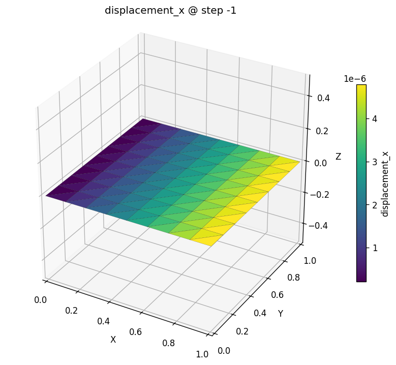

A plate in tension¶
In your first model you drove a beam through the typed
OpenSees bridge. Now you'll drive a 2-D solid through the very same bridge —
same apeSees(fem), same "target everything by name" habit — and watch a
continuum stress problem fall out just as cleanly.
We pick the unit square in tension on purpose. It is the Hello, World of continuum mechanics: pull on one edge, hold the opposite edge, and the whole plate stretches by a number you can write down without solving anything. If apeGmsh nails this uniform-stress benchmark, you can believe what it tells you about the stress fields that don't have a one-line answer.
The problem¶
A square plate, side $L$, thickness $t$, pulled in tension by a uniform edge stress $\sigma$. The left edge is on rollers (it can slide up and down but not left-right); the right edge is pulled. This is plane stress — the plate is thin, so it's free to thin out through its thickness.
σ (uniform edge tension, +x) →→→
rollers ┊ →
u_x = 0 ┊███████████████████████████████████ →
┊███████████████████████████████████ → pulled
┊███████████████████████████████████ → edge
┊<------------- L = 1 m ------------>┊ →
Plane stress: thickness t = 10 mm
Material: steel, E = 200 GPa, ν = 0.30
σ = 1 MPa
Under a uniform uniaxial stress $\sigma$, the strain is uniform too — $\varepsilon_{x} = \sigma/E$ — so the right edge moves by
$$ u_{x} \;=\; \frac{\sigma\,L}{E}. $$
With $\sigma = 1\ \text{MPa} = 1\times10^{6}\ \text{Pa}$, $L = 1\ \text{m}$, and $E = 200\times10^{9}\ \text{Pa}$:
$$ u_{x} \;=\; \frac{1\times10^{6}\cdot 1}{200\times10^{9}} \;=\; 5\times10^{-6}\ \text{m} \;=\; 5\ \mu\text{m}. $$
Keep 5 µm in your back pocket. There's a bonus check too: the plate contracts sideways by Poisson's ratio, so the top edge pulls in by $u_{y} = -\nu\,\sigma L/E = -1.5\ \mu\text{m}$. We'll see both.
Units
Same as before — apeGmsh stores the numbers you give it. We work in consistent SI: metres, newtons, pascals. Lengths in metres, so displacements come out in metres (we print microns for readability).
The whole model¶
Here is the entire script. As before, read it top to bottom first — it's a close cousin of the cantilever, and the shape will feel familiar. The only new ideas are a surface mesh of quads, an nDMaterial, and a tributary edge load. We walk through each block right after.
import numpy as np
from apeGmsh import apeGmsh, Results
from apeGmsh.opensees import apeSees, OpenSeesModel
from apeGmsh.results.capture.spec import DomainCaptureSpec
# --- Problem data (consistent SI: m, N, Pa) ---
L = 1.0 # plate side [m]
t = 0.010 # out-of-plane thick. [m]
E = 200e9 # Young's modulus [Pa] (steel)
nu = 0.30 # Poisson's ratio [-]
sigma = 1.0e6 # edge tension [Pa] = 1 MPa
N = 8 # quad cells per side
u_exact = sigma * L / E # uniform-stress closed form
# --- 1. Geometry + physical groups, inside a session ---
with apeGmsh(model_name="plate") as g:
geo = g.model.geometry
p0 = geo.add_point(0.0, 0.0, 0.0)
p1 = geo.add_point(L, 0.0, 0.0)
p2 = geo.add_point(L, L, 0.0)
p3 = geo.add_point(0.0, L, 0.0)
e_bot = geo.add_line(p0, p1)
e_rgt = geo.add_line(p1, p2)
e_top = geo.add_line(p2, p3)
e_lft = geo.add_line(p3, p0)
loop = geo.add_curve_loop([e_bot, e_rgt, e_top, e_lft])
plate = geo.add_plane_surface(loop)
g.model.sync()
g.physical.add(2, [plate], name="Plate") # the surface -> quad elements
g.physical.add(1, [e_lft], name="Left") # roller edge (u_x = 0)
g.physical.add(1, [e_rgt], name="Right") # pulled edge + readout
g.physical.add(0, [p0], name="Pin") # one node pinned in y
# Structured quad mesh: transfinite edges -> transfinite surface -> recombine
for edge in (e_bot, e_rgt, e_top, e_lft):
g.mesh.structured.set_transfinite_curve(edge, n_nodes=N + 1)
g.mesh.structured.set_transfinite_surface(plate)
g.mesh.structured.set_recombine(plate) # triangles -> quads
g.mesh.generation.generate(2) # 2 = mesh 2-D entities
fem = g.mesh.queries.get_fem_data(dim=2)
# Grab the right-edge nodes (ids + coords, aligned) for the edge load.
right = fem.nodes.select(pg="Right")
right_ids, right_coords = right.ids, right.coords
# --- 2. Build the OpenSees model through the typed bridge ---
ops = apeSees(fem)
ops.model(ndm=2, ndf=2) # 2-D solid: ux, uy (no rotation)
steel = ops.nDMaterial.ElasticIsotropic(E=E, nu=nu, rho=0.0)
ops.element.FourNodeQuad(
pg="Plate", thickness=t, material=steel, plane_type="PlaneStress",
)
ops.fix(pg="Left", dofs=(1, 0)) # roller: u_x = 0, u_y free
ops.fix(pg="Pin", dofs=(0, 1)) # kill rigid-body y at one node
# Uniaxial edge tension as tributary nodal forces: total F = sigma*L*t,
# lumped to the right-edge nodes (corner nodes carry half a segment).
f_seg = sigma * (L / N) * t # force per full edge segment
ymin, ymax = right_coords[:, 1].min(), right_coords[:, 1].max()
ts = ops.timeSeries.Linear()
with ops.pattern.Plain(series=ts) as pat:
for nid, c in zip(right_ids, right_coords):
on_corner = abs(c[1] - ymin) < 1e-9 or abs(c[1] - ymax) < 1e-9
w = 0.5 if on_corner else 1.0
pat.load(node=int(nid), forces=(w * f_seg, 0.0))
ops.constraints.Plain()
ops.numberer.RCM()
ops.system.BandGeneral()
ops.test.NormDispIncr(tol=1e-12, max_iter=20)
ops.algorithm.Linear()
ops.integrator.LoadControl(dlam=1.0)
ops.analysis.Static()
# --- 3. Solve, capturing the nodal displacement field ---
spec = DomainCaptureSpec(opensees=ops)
spec.nodes(pg="Right", components=["displacement"])
spec.nodes(pg="Plate", components=["displacement"])
with ops.domain_capture(spec, path="run.h5") as cap:
cap.begin_stage("tension", kind="static")
ops.analyze(steps=1)
cap.step(t=1.0)
cap.end_stage()
# --- 4. Read the field back by physical-group NAME ---
results = Results.from_native("run.h5", model=OpenSeesModel.from_h5("run.h5"))
ux = results.nodes.get(pg="Right", component="displacement_x").values[-1, :]
u_fem = float(ux.mean())
print(f"u_x_FEM = {u_fem*1e6:.4f} um")
print(f"u_x_exact = {u_exact*1e6:.4f} um")
print(f"error = {abs(u_fem-u_exact)/u_exact*100:.4f} %")
Run it. You should see:
That's our 5 µm, dead on. (Like the cantilever, the error is exactly zero, not just small — a constant-stress field is the simplest thing a quad element can represent, so it reproduces the closed-form answer with no discretization error. This is the FEM "patch test" in miniature.) Now let's see why each block does what it does.
Step 1 — A surface, meshed into quads¶
with apeGmsh(model_name="plate") as g:
geo = g.model.geometry
p0 = geo.add_point(0.0, 0.0, 0.0)
p1 = geo.add_point(L, 0.0, 0.0)
p2 = geo.add_point(L, L, 0.0)
p3 = geo.add_point(0.0, L, 0.0)
e_bot = geo.add_line(p0, p1)
e_rgt = geo.add_line(p1, p2)
e_top = geo.add_line(p2, p3)
e_lft = geo.add_line(p3, p0)
loop = geo.add_curve_loop([e_bot, e_rgt, e_top, e_lft])
plate = geo.add_plane_surface(loop)
g.model.sync()
Where the cantilever was a single line, the plate is a surface. We build it
the explicit way — four corner points, four edges, a closed curve loop, a plane
surface filling it — because that hands us a named handle to every edge. Those
edge handles are exactly what we'll attach the roller and the load to. (There's
also a one-liner, geo.add_rectangle(0, 0, 0, L, L), when you don't need the
edges by name.)
Physical groups, again — now mixing dimensions¶
g.physical.add(2, [plate], name="Plate") # dim 2 = the surface
g.physical.add(1, [e_lft], name="Left") # dim 1 = an edge
g.physical.add(1, [e_rgt], name="Right")
g.physical.add(0, [p0], name="Pin") # dim 0 = a point
Same habit as the cantilever, one dimension up. "Plate" is the surface
(dim 2) that becomes our quad elements; "Left" and "Right" are edges
(dim 1) that become the support and the load; "Pin" is a single point
(dim 0). Notice all four live in one model at three different dimensions —
that's normal, and naming keeps them straight. From here on we never touch a
raw entity number.
A structured quad mesh¶
for edge in (e_bot, e_rgt, e_top, e_lft):
g.mesh.structured.set_transfinite_curve(edge, n_nodes=N + 1)
g.mesh.structured.set_transfinite_surface(plate)
g.mesh.structured.set_recombine(plate) # triangles -> quads
g.mesh.generation.generate(2)
fem = g.mesh.queries.get_fem_data(dim=2)
By default Gmsh fills a surface with triangles. We want a clean grid of
quadrilaterals so we can use the four-node quad element, so we ask for a
structured mesh: pin the same node count on every edge
(set_transfinite_curve), tell the surface to interpolate a regular grid
between them (set_transfinite_surface), and recombine the resulting
triangles into quads (set_recombine). generate(2) then meshes the 2-D
geometry into an $N\times N$ grid of quads.
The payoff line is the same as before: get_fem_data(dim=2) snapshots the
meshed model — nodes, quad connectivity, and your physical groups — into a
FEMData object. We grab it inside the with, then carry it across into the
OpenSees world.
We also pull the right-edge nodes straight off the snapshot — by name,
naturally. fem.nodes.select(pg="Right") returns a selection whose .ids and
.coords arrays are aligned row-for-row. We'll use these to lump the edge
tension onto the correct nodes in Step 2.
Step 2 — The typed bridge, now driving a solid¶
Identical opening to the cantilever — except for the DOF count. A 2-D solid
node has just two degrees of freedom, $u_x$ and $u_y$: there is no rotation,
because a continuum carries load by stretching and shearing, not by bending a
cross-section. So ndf=2, where the frame needed ndf=3.
steel = ops.nDMaterial.ElasticIsotropic(E=E, nu=nu, rho=0.0)
ops.element.FourNodeQuad(
pg="Plate", thickness=t, material=steel, plane_type="PlaneStress",
)
Here is the first genuinely new idea. The cantilever used a uniaxial material
baked into a beam-column. A solid element needs a multi-dimensional
constitutive law — an nDMaterial — so we reach into ops.nDMaterial instead
of ops.uniaxialMaterial and construct ElasticIsotropic(E, nu, rho). Like
the geomTransf in the cantilever, it comes back as a handle you pass by
reference.
Then ops.element.FourNodeQuad(pg="Plate", ...) realizes every quad in the
"Plate" group as a four-node plane element with that material. Two new
parameters earn their keep:
thickness=t— a 2-D element still has an out-of-plane dimension; the thickness sets how much material each quad represents.plane_type="PlaneStress"— the modeling assumption. Plane stress (a thin plate, free to thin through its thickness) is the right choice here; its sibling plane strain (a slice of a long body that can't strain out-of-plane) is what you'd use for a dam cross-section or a tunnel lining. The two give different stiffness for the same $E$ and $\nu$ — picking the right one is a modeling decision, not a default.
ops.fix(pg="Left", dofs=(1, 0)) # roller: u_x = 0, u_y free
ops.fix(pg="Pin", dofs=(0, 1)) # kill rigid-body y at one node
The supports. dofs=(1, 0) on "Left" fixes $u_x$ and leaves $u_y$ free — a
roller that lets the edge slide vertically as the plate Poisson-contracts,
exactly the boundary condition the uniform-stress solution assumes. Then one
node ("Pin", the bottom-left corner) gets its $u_y$ pinned too, just to remove
the last rigid-body freedom (the plate could otherwise float up or down). Two
masks of length ndf=2, and the body is held without over-constraining it.
f_seg = sigma * (L / N) * t
ymin, ymax = right_coords[:, 1].min(), right_coords[:, 1].max()
ts = ops.timeSeries.Linear()
with ops.pattern.Plain(series=ts) as pat:
for nid, c in zip(right_ids, right_coords):
on_corner = abs(c[1] - ymin) < 1e-9 or abs(c[1] - ymax) < 1e-9
w = 0.5 if on_corner else 1.0
pat.load(node=int(nid), forces=(w * f_seg, 0.0))
The load. A stress is force-per-area, but OpenSees applies nodal forces, so we
convert: the total pull on the edge is $\sigma\,L\,t$, and we spread it over the
right-edge nodes as a tributary load — each interior node owns one edge
segment of length $L/N$, the two corner nodes own half a segment each. That's
the w = 0.5 on corners. We loop the aligned right_ids / right_coords we
grabbed in Step 1 and drop a horizontal force on each node inside a Plain
pattern — the same pattern machinery the cantilever used for its tip load.
Why a tributary load, not the element pressure=?
FourNodeQuad does take a pressure= parameter, and it's tempting to reach
for it here. Don't — not for this problem. OpenSees's quad pressure
applies a normal pressure to every edge of every element; summed over a
full mesh that pressurizes the whole outer boundary (a biaxial
hydrostatic state), and it ignores the element thickness. That's the wrong
physics for a one-edge uniaxial pull. A tributary nodal load on the named
edge is the honest, controllable way to apply a true edge traction — and it
is not a hand-rolled loop over raw tags: we drive it off the
pg="Right" selection, by name. (For a genuine all-around confining
pressure — a buried tunnel, a pressure vessel wall — pressure= is exactly
the right tool.)
The remaining lines are the standard analysis chain, same recipe as the
cantilever (Linear algorithm, Static analysis) — one linear step solves an
elastic problem exactly.
Step 3 — Solve and capture the field¶
spec = DomainCaptureSpec(opensees=ops)
spec.nodes(pg="Right", components=["displacement"])
spec.nodes(pg="Plate", components=["displacement"])
with ops.domain_capture(spec, path="run.h5") as cap:
cap.begin_stage("tension", kind="static")
ops.analyze(steps=1)
cap.step(t=1.0)
cap.end_stage()
Same capture machinery as the cantilever, but now we record the displacement of
a whole surface — every node in "Plate" — not just one tip. That's what lets
us contour the field in a moment. The "Right" capture is the readout for our
number check. ops.analyze(steps=1) runs the one static step in-process, and
when the block exits run.h5 holds the field plus a copy of the model.
Step 4 — Read the field back, by name¶
results = Results.from_native("run.h5", model=OpenSeesModel.from_h5("run.h5"))
ux = results.nodes.get(pg="Right", component="displacement_x").values[-1, :]
u_fem = float(ux.mean())
Exactly the read path from the cantilever — Results.from_native(...) with the
required model= broker — only now the component is displacement_x (the
direction we pulled) and we ask for the whole "Right" edge at once. The slab's
.values[-1, :] is the last step, all right-edge nodes. They all come back at
5.000 µm — the field is uniform along the edge, just as a constant-stress
solution demands — so the mean is the answer.
And the Poisson bonus, if you read "Right"'s displacement_y too: the
top-right corner has contracted to -1.500 µm, exactly $-\nu\sigma L/E$.
The same plate, the same solve, hands you both the axial stretch and the
sideways squeeze — read out by name.
See it — contour the field¶
A number is the proof; a picture is the intuition. results.plot is the
headless matplotlib renderer (the [plot] extra), and contour paints a nodal
field across the mesh:
ax = results.plot.contour("displacement_x", step=-1, cmap="viridis")
ax.figure.savefig("plate-ux.png", dpi=120, bbox_inches="tight")

Read it left to right: $u_x$ ramps linearly from zero at the fixed left edge to 5 µm at the pulled right edge, and it's constant up each column — flat in $y$. That's the visual signature of a uniform strain field: equal stress everywhere means equal stretch everywhere. If your mesh ever shows blotches or gradients in $y$ on this problem, something's wrong with the supports or the load.
The interactive view
For a 3-D, rotatable, deform-on-slider view — great in a Jupyter notebook —
call results.show_web() instead. It launches the kernel-safe web viewer
right in your output cell. (As in the cantilever tutorial, never call the
blocking desktop results.viewer() inside a notebook — it crashes the
kernel.)
What you just learned¶
Same spine as the cantilever, pushed one dimension up:
- A surface, not a line. Build a plane surface from named edges, mesh it
into a structured grid of quads (
transfinite+recombine), and snapshot it withget_fem_data(dim=2). Physical groups now span dim 0/1/2 in one model — naming keeps them sorted. - A solid needs an
nDMaterial. Solid elements take a multi-dimensional constitutive law fromops.nDMaterial, not the uniaxial materials a beam uses.FourNodeQuadaddsthickness=and theplane_type=modeling choice. ndf=2for a 2-D solid — two translations, no rotation. The DOF count is a property of the physics, not a default to copy.- A traction is a tributary nodal load, applied through a
Plainpattern by selecting the edgepg="Right"by name — not the elementpressure=, which is a closed-boundary confining load, not a one-edge pull. - Read a field back by name with
results.nodes.get(pg=..., component=...), and contour it withresults.plot.contour(...).
And the model checks out — 5 µm of stretch and 1.5 µm of Poisson squeeze, exactly $\sigma L/E$ and $-\nu\sigma L/E$.
Where next¶
- The SS beam, the apeGmsh way — meet the loads/masses/sections composites: declare a distributed load once and let apeGmsh resolve the tributary work for you (no more hand-lumping like we did on the edge here).
- Save, reload, view — persist a model to disk and reopen it, and the full notebook-safe results loop.
- Core mental model — the six ideas behind everything you just did, on one page. ```